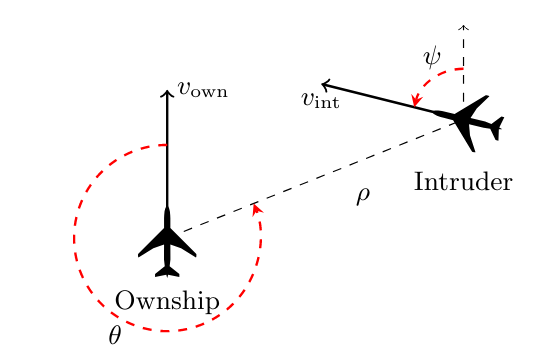

4.1. Functional properties of ACAS-Xu¶
ACAS-Xu stands for Aircraft Collision Avoidance System. Introduced for instance in [Manfredi2016], it is a specification of a program which aim to output signals for an aircraft in a situation where there is a potential for collision. In the rest of this tutorial, we will use the flavour ACAS-Xu defined in [Katz2017], where the authors aim to verify a neural network implementing part of the ACAS-Xu specification. Its low dimensionality and well-defined semantics make it a de facto benchmark for machine learning verification.
4.1.1. Use case presentation¶
The system considers a 2D plane with two entities: the monitored airplane (the “ownship”) and an incoming airplane (the “intruder”).
{kind=link}
In the original implementation, the system state has seven inputs:
\(v_{own}\): speed of ownship
\(v_{int}\): speed of intruder
\(\rho\): distance from ownship to intruder
\(\theta\): angle to intruder relative to ownship heading direction
\(\psi\): heading angle of intruder relative to ownship heading direction
\(\tau\): time until vertical separation
\(a_{prev}\): previous advisory
It has five outputs, that correspond to the different direction advisories the system can give:
\(COC\): Clear Of Conflict
\(WL\): Weak Left
\(SL\): Strong Left
\(WR\): Weak Right
\(SR\): Strong Right
In the original paper, the authors consider \(45\) neural networks, for several values of \(\tau\) and \(a_{prev}\), that operate on five inputs only while maintaining the same number of outputs. We will consider five-inputs networks in the remaining of this example.
4.1.1.1. Properties¶
There are several functional properties one may want to verify on this system, for instance:
Guarantee that the system will never output COC advisory when the intruder is nearby,
Guarantee that the system will never output an advisory that may result in a collision,
Guarantee that the system will not output a strong advisory where a weak variant would be enough.
Authors of [Katz2017] propose ten properties to verify. We will reproduce the first and third properties here, and then show how to use CAISAR for verifying whether a given neural network respects them.
Property \(\phi_1\)
Definition. If the intruder is distant and is significantly slower than the ownship, the score of a COC advisory will always be below a certain fixed threshold.
Input constraints:
\(\rho \geq 55947.691\),
\(v_{own} \geq 1145\),
\(v_{int} \leq 60\).
Desired output property:
\(COC \leq 1500\).
Property \(\phi_3\)
Definition. If the intruder is directly ahead and is moving towards the ownship, the score for COC will not be minimal.
Input constraints:
\(1500 \leq \rho \leq 1800\),
\(-0.06 \leq \theta \leq 0.06\),
\(\psi \geq 3.10\),
\(v_{own} \geq 980\),
\(v_{int} \geq 960\).
Desired output property:
\(COC\) is not the minimal score.
4.1.1.2. Modelling the problem using WhyML¶
The first step for verifying anything with CAISAR is to write a specification file that describe the problem to verify as a so-called theory. A theory can be seen as a namespace inside which are defined logical terms, formulas and verification goals. In particular, being based on the Why3 platform for deductive program verification, CAISAR supports the Why3 specification language WhyML, and inherits the Why3 standard library of logical theories (integer, float and real arithmetic, etc.) and basic programming data structures (arrays, queues, hash tables, etc.).
Additionnaly, CAISAR extends WhyML by providing several builtins predicates and function symbols. The full extend of those additions will be documented in a future release. This example will use some of those undocumented extensions to display the capabilities of CAISAR; the wording “WhyML extensions” will be used when this happens. We believe those extensions are simple enough so that their meaning in the verification is transparent.
Let us try to model the property \(\phi_1\) defined earlier. We will call
our theory ACASXU_P1.
We will need to write down some numerical values. As of now, CAISAR allows
writing values using floating-point arithmetic only. Why3 defines a float type
and the relevant arithmetic operations according to the IEEE floating-point
standard in a theory, astutely called ieee_float. Specifically, we will
import the Float64 sub-theory, that defines everything we need for 64-bit
precision floating-point numbers. We thus import it in our theory using the
use keyword.
Our file looks like this so far:
theory ACASXU_P1
use ieee_float.Float64
end
We would like to verify our property given a certain neural network. To do this, CAISAR provide WhyML extensions to recognize and apply neural networks in ONNX and NNet formats on vector inputs. Given a file of such formats, CAISAR is able to provide the following:
a logical symbol of type
nn, built using theread_neural_networkfunction, of typestring -> format -> nn. The first argument is the path to the neural network file,formatis eitherONNXorNNet, andnnis the type of the neural network in WhyML;a function symbol that returns the output of the application of the neural network to a given input;
types and predicates to manipulate inputs vectors;
The full reference for those WhyML extensions is available under the
stdlib/interpretation.mlw file. To create a logical symbol for a neural network located in “nets/onnx/ACASXU_1_1.onnx”, we can import the relevant theories in our file and use the read_neural_network function symbol like this:
theory ACASXU_P1
use ieee_float.Float64
use interpretation.Vector
use interpretation.NeuralNetwork
constant nn_1_1: nn = read_neural_network "nets/onnx/ACASXU_1_1.onnx" ONNX
end
Now is the time to define our verification goal, that will call P1_1_1 for
property \(\phi_1\) on neural network \(N_{1,1}\).
We first model the inputs of the neural network \(\rho, \theta, \psi,
v_{own}, v_{int}\) respectively as the floating-points constants \(x_i\) for
\(i \in [0..4]\). Moreover, we constrain these to the range of
floating-point values each may take. According to the original authors, values
were normalized during the training of the network, and so we adapt the values
they provide in their repository. Since we will manipulate integer indexes, we require the use of the int.Int Why3 library. We can write that as a predicate for clarity:
theory ACASXU_P1
use ieee_float.Float64
use int.Int
use interpretation.Vector
use interpretation.NeuralNetwork
constant nn_1_1: nn = read_neural_network "nets/onnx/ACASXU_1_1.onnx" ONNX
predicate valid_input (i: vector t) =
(0.5999999999999999777955395074968691915273666381835937500000000000:t) .<= i[0] .<= (0.6798577687000000313588543576770462095737457275390625000000000000:t)
/\ (-0.5:t) .<= i[1] .<= (0.5:t)
/\ (-0.5:t) .<= i[2] .<= (0.5:t)
/\ (0.4500000000000000111022302462515654042363166809082031250000000000:t) .<= i[3] .<= (0.5:t)
/\ (-0.5:t) .<= i[4] .<= (-0.4500000000000000111022302462515654042363166809082031250000000000:t)
end
We must then define the result of the application of nn_1_1 on the inputs.
The built-in function @@ serves this purpose. Its type, nn -> vector 'a -> vector 'a, describes what it does: given a neural network nn and an input vector x, return the vector that is the result of the application of nn on x.
Note that thanks to type polymorphism, @@ can be used to
describe a variety of input vectors, including floating points, integers, or strings.
We can finally define the output constraint
we want to enforce on the first coordinate of the output vector that we use to
model the advisory COC. We use the WhyML extension
predicate has_length to further check that our inputs
are of valid length.
The final WhyML file looks like this:
theory ACASXU_P1
use ieee_float.Float64
use int.Int
use interpretation.Vector
use interpretation.NeuralNetwork
constant nn_1_1: nn = read_neural_network "nets/onnx/ACASXU_1_1.onnx" ONNX
predicate valid_input (i: vector t) =
(0.5999999999999999777955395074968691915273666381835937500000000000:t) .<= i[0] .<= (0.6798577687000000313588543576770462095737457275390625000000000000:t)
/\ (-0.5:t) .<= i[1] .<= (0.5:t)
/\ (-0.5:t) .<= i[2] .<= (0.5:t)
/\ (0.4500000000000000111022302462515654042363166809082031250000000000:t) .<= i[3] .<= (0.5:t)
/\ (-0.5:t) .<= i[4] .<= (-0.4500000000000000111022302462515654042363166809082031250000000000:t)
goal P1_1_1:
forall i: vector t. has_length i 5 -> valid_input i ->
(nn_1_1@@i)[0] .<= (3.9911256458999999630066213285317644476890563964843750000000000000:t)
end
This file is available, as is, under the /examples/acasxu/ folder as
property_1.why.
The corresponding neural network in ONNX format is available under the
/examples/acasxu/nets/onnx/ folder as ACASXU_1_1.onnx.
4.1.1.3. Verifying the property with CAISAR¶
Once formalized, the specified property can be assessed by using CAISAR. We will use the open-source provers CAISAR supports for verifying properties of neural networks so to take advantage of the federating approach: whenever one prover cannot provide an answer, another may instead. In particular, we will use Marabou and nnenum.
Assuming the prover locations are available in PATH, the following are the
CAISAR verification invocations using Marabou first and nnenum afterwords, for
verifying the ACAS-Xu property \(\phi_1\):
$ caisar verify --prover Marabou -L examples/acasxu/nets/onnx --format whyml examples/acasxu/property_1.why -t 10m
[caisar] Goal P1_1_1: Timeout
$ caisar verify --prover nnenum -L examples/acasxu/nets/onnx --format whyml examples/acasxu/property_1.why -t 10m
[caisar] Goal P1_1_1: Valid
Note that the previous commands set the verification time limit to 10 minutes
(cf. -t option), and the additional location examples/acasxu/nets/onnx
(cf. -L option) for letting CAISAR correctly locate the neural network
file ACASXU_1_1.onnx that is used by the ACASXU_P1 theory in
property_1.why.
Under the hood, CAISAR first translates each goal into a compatible form for the targeted provers, then calls the provers on them, and finally interprets and post-processes the prover results for displaying them in a coherent form to the user.
Marabou is not able to prove the property valid in the specified time limit,
while nnenum does. In general, the result of a CAISAR verification is typically
either Valid, Invalid, Unknown or Timeout. CAISAR may output
Failure whenever the verification process fails for whatever reason
(typically, a prover internal failure).
4.1.1.4. Using more advanced WhyML constructs¶
Let us model the ACAS-Xu property \(\phi_3\), and verify it for the neural networks \(N_{1,1}\) and \(N_{2,7}\) [Katz2017].
From the modelling standpoint, the main evident difference concerns the desired output property, meaining that COC should not be the minimal value. A straightforward way to express this property is that the corresponding floating-point constant \(y_0\) is greater than or equal to at least one of the other five outputs. This can be formalized in first-order logic as a disjunction of clauses, that can be directly encoded into WhyML as follows:
y0 .>= y1 \/ y0 .>= y2 \/ y0 .>= y3 \/ y0 .>= y4
The delicate point is how to model the same property for two different neural networks. Of course, we could define a theory with two identical but distinct verification goals or two entirely distinct theories in a same WhyML file. However, these two solutions are not advisable in terms of clarity and maintainability.
Reassuringly enough, WhyML provides all necessary features to come up with a
better solution. First, we can use the read_neural_network
extension as much as needed to represent distinct neural networks.
Second, WhyML allows for the hypotheses on
the floating-point constants modelling the neural network inputs to be exported
from the verification goal into the theory general context as axioms.
In the end, the WhyML file looks like this:
theory ACASXU_P3
use ieee_float.Float64
use int.Int
use interpretation.Vector
use interpretation.NeuralNetwork
constant nn_1_1: nn = read_neural_network "nets/onnx/ACASXU_1_1.onnx" ONNX
constant nn_2_7: nn = read_neural_network "nets/onnx/ACASXU_2_7.onnx" ONNX
predicate valid_input (i: vector t) =
(-0.3035311560999999769272506000561406835913658142089843750000000000:t) .<= i[0] .<= (-0.2985528118999999924731980627257144078612327575683593750000000000:t)
/\ (-0.0095492965999999998572000947660853853449225425720214843750000000:t) .<= i[1] .<= (0.0095492965999999998572000947660853853449225425720214843750000000:t)
/\ (0.4933803236000000036476365039561642333865165710449218750000000000:t) .<= i[2] .<= (0.5:t)
/\ (0.2999999999999999888977697537484345957636833190917968750000000000:t) .<= i[3] .<= (0.5:t)
/\ (0.2999999999999999888977697537484345957636833190917968750000000000:t) .<= i[4] .<= (0.5:t)
predicate is_min (o: vector t) (i: int) =
forall j: int. 0 <= j < 5 -> i <> j -> o[i] .<= o[j]
goal P3_1_1:
forall i: vector t. has_length i 5 -> valid_input i -> not (is_min (nn_1_1@@i) 0)
goal P3_2_7:
forall i: vector t. has_length i 5 -> valid_input i -> not (is_min (nn_2_7@@i) 0)
end
Note how the two verification goals P3_1_1 and P3_2_7 are clearly almost
identical, but for the nn logic symbol used, identifying respectively
the ACASXU_1_1.onnx and ACASXU_2_7.onnx neural networks.
We can then verify the resulting verification problem as before:
$ caisar verify --prover Marabou -L examples/acasxu/nets/onnx --format whyml examples/acasxu/property_3.why -t 10m
[caisar] Goal P3_1_1: Timeout
[caisar] Goal P3_2_7: Valid
$ caisar verify --prover nnenum -L examples/acasxu/nets/onnx --format whyml examples/acasxu/property_3.why -t 10m
[caisar] Goal P3_1_1: Valid
[caisar] Goal P3_2_7: Valid
It is interesting to remark that, since Marabou does not support disjunctive formulas, CAISAR first splits a disjunctive goal formula into conjunctive sub-goals, then calls Marabou on each sub-goal, and finally post-processes the sub-results to provide the final result corresponding to the original goal formula.
- Manfredi2016
G. Manfredi and Y. Jestin, An introduction to ACAS Xu and the challenges ahead, 2016 IEEE/AIAA 35th Digital Avionics Systems Conference (DASC), 2016, pp. 1-9, doi: 10.1109/DASC.2016.7778055
- Katz2017(1,2,3)
Katz, G., Barrett, C., Dill, D.L., Julian, K., Kochenderfer, M.J. (2017). Reluplex: An Efficient SMT Solver for Verifying Deep Neural Networks. CAV 2017, doi: 10.1007/978-3-319-63387-9_5